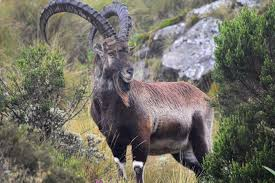
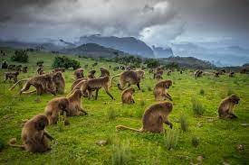
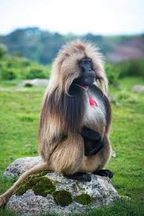
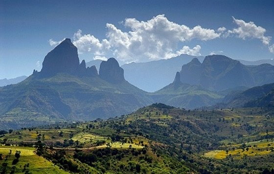

Simien Mountains National Park
  The Simien Mountains National Park in Northern Ethiopia is an exotic setting with unique wildlife and breath-taking views on a landscape shaped by nature and traditional agriculture. The natural beauties of this region have always filled visitors from Ethiopia and abroad with awe. Gentle highland ridges at altitudes above 3600 meters above sea level (m asl), covered with grasses, isolated trees (Erica &bored) and the bizarre Giant Lobelia (Lobelia rhynchopetalum) are found on the high plateau that ends abruptly at 1000- to 2000-m deep escarpments.
The margins of this high plateau consist of precipitous cliffs and deep, canyon-style gorges. In some places, the escarpment forms small elevations that offer splendid natal lookout points. The spectacular views from the observation points at Gidir Got and lmet Gogo in the center of the Park offer unparalleled panoramas along the high plateau and down to the lowland areas. Given the right meteorological conditions, views reaching up to a hundred kilometers over the valleys and the terraces of the Tekeze lowland basin are no exception. Geologically speaking, the entire highlands of the Simien mountains consist of dark Trapp basalt and bright, soft turf. They alternate and constitute a massive complex that is more than 3000 m thick. This complex was formed by volcanic eruptions in the Tertiary Oligocene-Miocene Age some 20-30 million years ago; ever since, it has been going through processes of uplifting and erosion.
The main attraction of the Simien Moumains National Park is its biosphere: the steep cliffs and the cool climate at the altitude of the Erica tree line (3600 to 4000 m ash) have created conditions that are appropriate for the survival of an ibex species (Capra ibex wee) endemic to the Simien Mountains. Despite the severe restriction of their habitat over the last centuries, several hundred animals have survived up to the present. Apart from the Walya ibex, many other animal species are found in the Park, for example the endemic Simien fox or Ethiopian wolf (Canis .071817,51-3 simony’s), several birds of prey, the endemic Gelada baboon ( Theropithecusgelada), the Klippspringer (Oreotragus omotragus), and the bush buck (liagelphus scriptus). The rareness of these species formed the backbone of the concept for conservation of the area, which led to the establishment of the Simien Mountains National Park in 1969, and its listing as a World Heritage Site in 1918.
The human population living in the area adds to the distinctiveness of this special natural environment. The traditional lifestyle of the rural population and their survival in a rather harsh climate and with scarce natural resources make for the most striking impressions a visitor will have when trekking in the Park and its surrounding rural area.
Near By Areas
Gondar
Gonder (also spelled, Gondar) is only 95 km from the park. The 16th century Ethiopian capital is home to a group of castles found in an enclosed park. The first castle was built during the reign of King Fasilides (1632 – 1667) and the remaining castles were built by his successors. Sometimes described as ‘Africa’s Camelot’ these castles have been a UNESCO World Heritage Site since 1979. Also found in Gonder is the Debre Birhan Sellasie Church (which means Trinity Church of the mountain of light) poised on a hilltop on the outskirts of town. The church has a particularly well-preserved ceiling of frescoes.
Market Days
Markets are a great way to get insight into the local way of life and give you a chance to socialize with the locals. The largest markets in Debark are a cattle market held on Wednesdays and a general market held on Saturdays. The market is located on the gravel road from town towards the park.
Welleqa (Felasha Village)
Situated 5km from Gonder along the Debark-Axum road is the Felasha Village. The village was established by Ethiopian Jews who were believed by many to have been descendants of the lost tribe. Although there are no longer any Ethiopian Jews remaining, you can buy local souvenirs here.
Kossoye Viewpoint
Kossoye viewpoint is about 38km from Gonder on the way to the Simien Mountains National park. At a height of about 2,300m, this beautiful spot provides magnificent views of the Simien Mountain range and as well as views of the lower ridges and valleys. Queen Elizabeth II once stopped here while traveling to Axum.
The church of Daresge Maryam
The church of Daresge Maryam, located 15km outside of the park boundary was consecrated in 1852. The 19th century in Ethiopia was a time where regions were ruled by warlords, some who claimed to be descendants of King Solomon and the Queen of Sheba. After thirty years of warfare Prince Webe was on the verge of being crowned emperor of the capital (Gonder) during that period, known as “Zämäna Mäsafint” or the “age of the princes”. Unfortunately, he lost the final battle to a young warrior named Kasa. Although it was Webe who built this church, it was Kasa who was crowned there. The paintings that you see in the church today probably began at the time of his coronation.
Kasa took the name of Emperor Tewodros II and, after initial military successes, became more ruthless and cruel then ever before. He dominated the highlands of Northern Ethiopia. During his reign, there were no roads over the mountains, only small foot tracks. Eventually he moved his capital from Debre Tabor in the east to Magdala – the goal of the military expedition by British forces in 1868 and the scene of the famous battle involving the troops of Queen Victoria.
Massive hardwood double doors, each weighing half a ton, guard the interior of the church. Colorful paintings cover over 30m2 per wall. The church is also home to other treasures commissioned by Webe: golden crowns, processional crosses, swords, and cups embroidered with gold and silver threads and encrusted with medallions. The church is found 15km southeast of the park boundary. You must travel through the park to get there. For more information about visiting this church please, Contact Us.